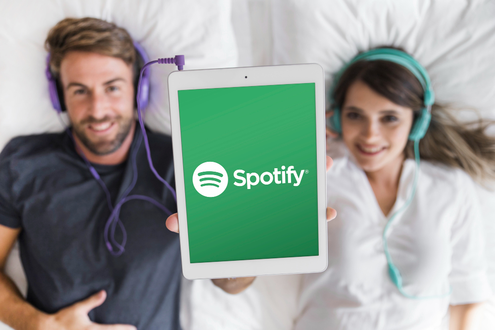

In today’s digital world, many online platforms offer both free and premium accounts to cater to different user needs. Whether you’re using a productivity app, a streaming service, or a fitness platform, the choice between a free and premium account can significantly impact your experience. But what if you’re already on a free account and want to explore the premium features? Or maybe you’re curious about how to switch back to a free account if needed spotify mod apk? Don’t worry—this guide will walk you through the process step-by-step and highlight the amazing benefits of upgrading to a premium account. Let’s dive in!
Before we get into the nitty-gritty of switching accounts, let’s talk about why you might want to upgrade to a premium account in the first place. Free accounts are great for getting a taste of what a platform has to offer, but premium accounts are where the magic happens. Here are some of the top reasons why upgrading is worth it:
Premium accounts often come with features that aren’t available in free versions. For example, you might get advanced tools, ad-free experiences, or early access to new updates. These features can save you time, enhance your productivity, or simply make your experience more enjoyable.
Running out of storage or hitting usage limits can be frustrating. Premium accounts typically offer more storage space, higher upload limits, and fewer restrictions, so you can focus on what matters most without interruptions.
Ever had a problem and wished you could get help faster? Premium users often receive priority customer support, meaning your issues are resolved quicker. It’s like having a fast pass at an amusement park—skip the long lines and get straight to the fun!
Let’s be honest—ads can be annoying. With a premium account, you can enjoy an ad-free experience, whether you’re streaming music, watching videos, or using an app. It’s like having a personal assistant who filters out all the distractions for you.
While premium accounts come with a price tag, they often provide incredible value for money. Think about it: if a premium feature saves you an hour a week, that’s 52 hours a year! Time is money, and premium accounts can help you make the most of both.
Switching from a free to a premium account is usually a straightforward process. Here’s a step-by-step guide to help you make the transition seamlessly:
First things first, log in to your account on the platform you’re using. Make sure you’re using the correct credentials to avoid any hiccups.
Once you’re logged in, head over to the account settings or profile section. This is typically found in the top-right corner of the screen or in a dropdown menu. Look for options like “Upgrade Account,” “Go Premium,” or “Subscription Plans.”
Most platforms offer different premium plans to suit various needs and budgets. For example, you might see monthly, yearly, or even lifetime subscription options. Take a moment to review the features included in each plan and choose the one that best fits your requirements.
To complete the upgrade, you’ll need to enter your payment information. Don’t worry—reputable platforms use secure encryption to protect your data. Once you’ve entered your details, confirm the purchase.
Congratulations! You’re now a premium user. Take some time to explore the new features and make the most of your upgraded account.
Life is full of changes, and sometimes you might need to switch back to a free account. Maybe your budget has shifted, or you no longer need the premium features. Whatever the reason, here’s how to make the switch:
Just like when you upgraded, start by logging in and navigating to your account settings.
Look for a section labeled “Subscription,” “Billing,” or “Manage Plan.” This is where you’ll find options related to your premium account.
Most platforms will give you the option to cancel your premium subscription. Keep in mind that some services may require you to cancel a few days before the next billing cycle to avoid being charged again.
After canceling, you’ll typically receive a confirmation message. Your account will revert to the free version at the end of the current billing period.
Once you’ve switched back, you might notice some features are no longer available. Don’t worry—you can always upgrade again in the future if your needs change.
Now that you know how to switch between free and premium accounts, let’s take a closer look at the benefits of premium features. These perks can make a world of difference in how you use a platform, so let’s explore why they’re worth every penny.
Premium accounts often come with advanced tools that can take your experience to the next level. For example, a photo editing app might offer premium filters and effects, while a project management tool could provide Gantt charts and automation features. These tools can help you work smarter, not harder.
With fewer restrictions and more resources, premium accounts can significantly boost your productivity. Whether it’s unlimited cloud storage, faster processing speeds, or the ability to collaborate with more team members, premium features are designed to help you get more done in less time.
Ads and pop-ups can disrupt your workflow or entertainment. Premium accounts eliminate these distractions, giving you a smoother, more enjoyable experience. It’s like having a VIP ticket to your favorite show—no interruptions, just pure enjoyment.
Many platforms offer exclusive content to premium users. This could include special tutorials, behind-the-scenes footage, or premium courses. It’s like being part of an exclusive club where you get access to the best stuff.
Some premium accounts come with additional perks, such as discounts on other services or products. For example, a streaming service might offer discounted concert tickets, or a fitness app could provide deals on workout gear. These savings can add up over time, making your premium subscription even more valuable.
By upgrading to a premium account, you’re not just benefiting yourself—you’re also supporting the platform and its developers. This helps ensure that the service continues to improve and grow, benefiting all users in the long run.
Switching between a free and premium account is a simple process that can open up a world of possibilities. Whether you’re looking to enhance your productivity, enjoy an ad-free experience, or access exclusive features, upgrading to a premium account is often a smart move. And if you ever need to switch back, the process is just as easy.
Remember, the best part about premium accounts is the value they provide. From advanced tools to priority support, these features are designed to make your life easier and more enjoyable. So why not give it a try? You might just wonder how you ever managed without it.
And hey, if you ever feel like switching back to a free account, that’s okay too. The beauty of these platforms is that they offer flexibility to suit your needs. Whether you’re team free or team premium, the choice is yours—and now you know exactly how to make the switch. Happy exploring!